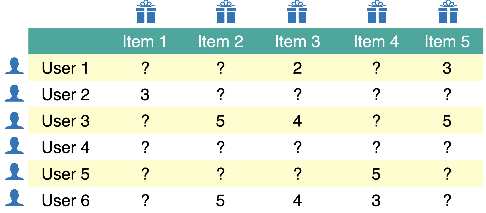
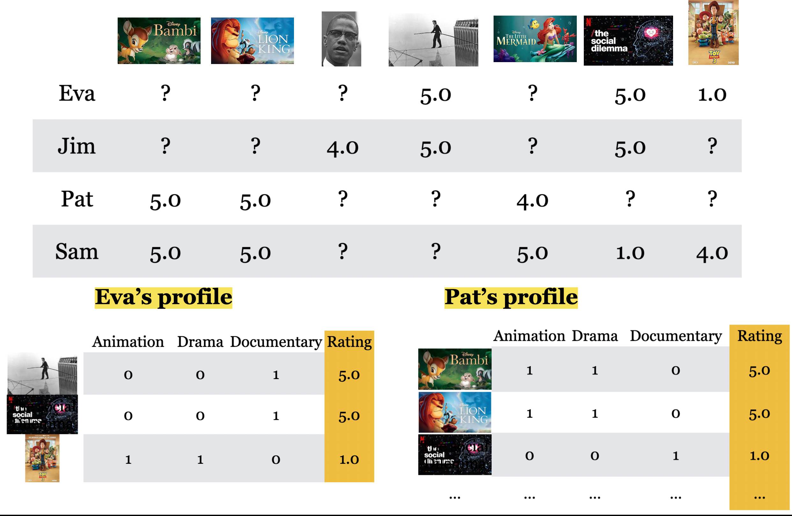
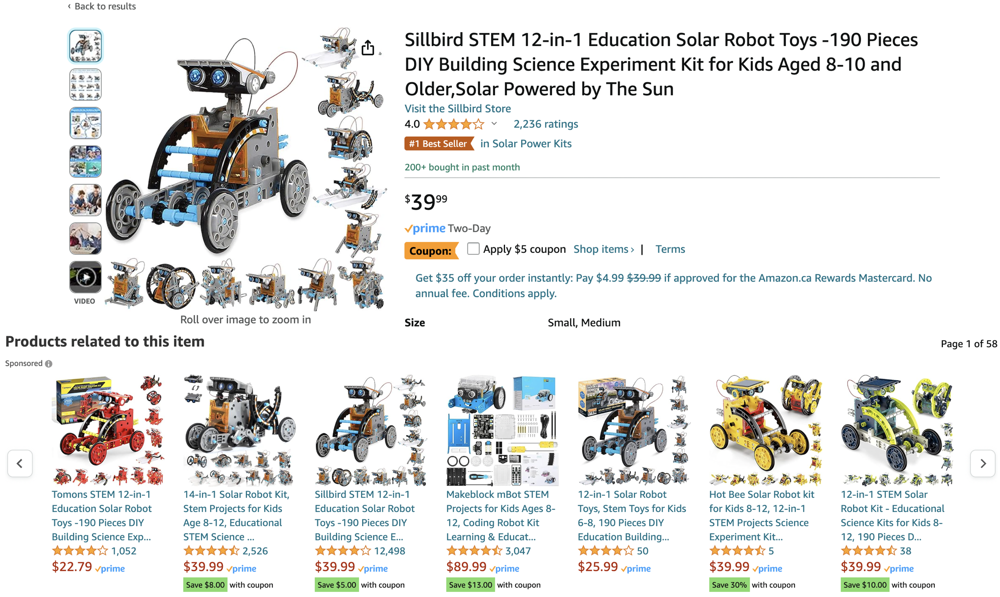

Show imports and setup
from pathlib import Path
import numpy as np
import pandas as pd
from sklearn.model_selection import train_test_split
DATA_DIR = Path("data")
pd.set_option("display.max_colwidth", None)By the end of this chapter, you will be able to:
from pathlib import Path
import numpy as np
import pandas as pd
from sklearn.model_selection import train_test_split
DATA_DIR = Path("data")
pd.set_option("display.max_colwidth", None)When a catalogue contains thousands of movies, books, or products, finding something useful can take considerable effort. A recommender system helps a user choose by selecting or ranking items they might find relevant.
For example, an online shop might use a customer’s purchase history, information about products, and other customers’ interactions to decide which products to display. The customer’s interests matter, but so does the goal of the system: recommending something useful and maximizing purchases are not necessarily the same objective.
Recommendations appear in music services, video platforms, online shops, and news feeds. They help users navigate large collections, while also influencing which items receive attention.
Imagine shopping for an umbrella without a useful ordering of the available products. Recommendations can reduce the effort of searching through many options.
This influence also creates responsibilities. Repeatedly showing similar material can limit the range of items or viewpoints a user encounters. We will return to diversity and the consequences of recommendation choices after building a simple recommender.
A recommender may have user–item interactions, such as ratings, clicks, or purchases, as well as features of items or users, such as a movie’s genre or a user’s stated interests. These signals have different meanings: a click is not necessarily evidence that someone liked an item.
In this chapter, we use explicit movie ratings. Our task is to predict how a user would rate an unseen movie, then use those predictions to select recommendations. This is one formulation of recommendation; other systems predict clicks or learn to rank items directly.
Two common approaches differ in the information they use. Collaborative filtering uses patterns in user–item interactions: users with similar rating histories may enjoy similar movies. Content-based filtering uses descriptive features of items to model a user’s preferences. Hybrid systems combine these sources of information.
We will illustrate collaborative filtering with a small KNN example, then focus on content-based filtering using regression models we already know.
A utility matrix organizes interactions between \(N\) users and \(M\) items. Here, rows represent users, columns represent movies, and entry \(y_{ij}\) is the rating user \(i\) gave movie \(j\).
The illustration below has six users and five items. Blank entries represent ratings we have not observed.

Most users rate only a small fraction of a catalogue, so most entries are missing. A missing rating does not mean that the user disliked the movie: they may never have encountered it.
Our rating-prediction task is to estimate the missing entries. This is often described as matrix completion. We can then rank movies a user has not rated by their predicted ratings; we need not actually store a completed matrix for a large catalogue.
How does this connect to regression? The ratings table initially has no single target column: the unknown ratings are scattered throughout a matrix. Once we construct features for user–movie pairs, however, we can treat each observed rating as a regression target. The matrix representation and the regression task are two ways to describe the same prediction problem.
Let’s construct a utility matrix from a small movie-rating dataset. Each row below is one observed rating.
toy_ratings = pd.read_csv(DATA_DIR / "toy_ratings.csv")
toy_ratings| user_id | movie_id | rating | |
|---|---|---|---|
| 0 | Sam | Lion King | 4 |
| 1 | Sam | Jerry Maguire | 4 |
| 2 | Sam | Roman Holidays | 5 |
| 3 | Sam | Downfall | 1 |
| 4 | Eva | Titanic | 2 |
| 5 | Eva | Jerry Maguire | 1 |
| 6 | Eva | Inception | 4 |
| 7 | Eva | Man on Wire | 5 |
| 8 | Eva | The Social Dilemma | 5 |
| 9 | Pat | Titanic | 3 |
| 10 | Pat | Lion King | 4 |
| 11 | Pat | Bambi | 4 |
| 12 | Pat | Cast Away | 3 |
| 13 | Pat | Jerry Maguire | 5 |
| 14 | Pat | Downfall | 2 |
| 15 | Pat | A Beautiful Mind | 3 |
| 16 | Jim | Titanic | 2 |
| 17 | Jim | Lion King | 3 |
| 18 | Jim | The Social Dilemma | 5 |
| 19 | Jim | Malcolm x | 4 |
| 20 | Jim | Man on Wire | 5 |
user_key = "user_id"
item_key = "movie_id"def get_stats(ratings, item_key="movie_id", user_key="user_id"):
print("Number of ratings:", len(ratings))
print("Average rating: %0.3f" % (np.mean(ratings["rating"])))
N = len(np.unique(ratings[user_key]))
M = len(np.unique(ratings[item_key]))
print("Number of users (N): %d" % N)
print("Number of items (M): %d" % M)
print("Fraction non-nan ratings: %0.3f" % (len(ratings) / (N * M)))
return N, M
N, M = get_stats(toy_ratings)Number of ratings: 21
Average rating: 3.524
Number of users (N): 4
Number of items (M): 12
Fraction non-nan ratings: 0.438We will use a dense NumPy array with NaN for missing ratings because the dataset is tiny. Large recommender datasets usually require representations that store only observed interactions; an ordinary sparse matrix’s implicit zeros should not be confused with observed zero ratings.
user_mapper = dict(zip(np.unique(toy_ratings[user_key]), list(range(N))))
item_mapper = dict(zip(np.unique(toy_ratings[item_key]), list(range(M))))
user_inverse_mapper = dict(zip(list(range(N)), np.unique(toy_ratings[user_key])))
item_inverse_mapper = dict(zip(list(range(M)), np.unique(toy_ratings[item_key])))The user and movie IDs are names, whereas a NumPy array uses integer positions. The mappers connect these names to positions; the inverse mappers let us recover names when displaying predictions.
def create_Y_from_ratings(data, N, M):
Y = np.full((N, M), np.nan)
for _, row in data.iterrows():
n = user_mapper[row[user_key]]
m = item_mapper[row[item_key]]
Y[n, m] = row["rating"]
return YY = create_Y_from_ratings(toy_ratings, N, M)
utility_mat = pd.DataFrame(Y, columns=item_mapper.keys(), index=user_mapper.keys())
utility_mat| A Beautiful Mind | Bambi | Cast Away | Downfall | Inception | Jerry Maguire | Lion King | Malcolm x | Man on Wire | Roman Holidays | The Social Dilemma | Titanic | |
|---|---|---|---|---|---|---|---|---|---|---|---|---|
| Eva | NaN | NaN | NaN | NaN | 4.0 | 1.0 | NaN | NaN | 5.0 | NaN | 5.0 | 2.0 |
| Jim | NaN | NaN | NaN | NaN | NaN | NaN | 3.0 | 4.0 | 5.0 | NaN | 5.0 | 2.0 |
| Pat | 3.0 | 4.0 | 3.0 | 2.0 | NaN | 5.0 | 4.0 | NaN | NaN | NaN | NaN | 3.0 |
| Sam | NaN | NaN | NaN | 1.0 | NaN | 4.0 | 4.0 | NaN | NaN | 5.0 | NaN | NaN |
The movie names label columns and the user names label rows. We know the observed ratings; the NaN entries are the predictions we would like to make.
We cannot directly check predictions for movies a user has never rated. Instead, we hold out some observed ratings, train on the rest, and compare predictions with the held-out values. These ratings provide targets for evaluating rating prediction, even though they do not tell us everything about recommendation quality.
We split rows of the ratings table, rather than entire users or movies. This asks how well we can predict additional ratings within this small catalogue. It is different from deliberately testing performance on entirely new users or items.
A random split can place all of a user’s or movie’s ratings in validation, especially with so little data. We will need a fallback when a user has no training ratings. In a deployed system, a time-based split may better reflect predicting future interactions from past ones.
train_ratings, valid_ratings = train_test_split(
toy_ratings, test_size=0.2, random_state=42
)
train_ratings.shape, valid_ratings.shape((16, 3), (5, 3))We keep the same row and column positions in both utility matrices, using the known catalogue of user and movie IDs. Only the training ratings will be available to fit our models.
train_mat = create_Y_from_ratings(train_ratings, N, M)
valid_mat = create_Y_from_ratings(valid_ratings, N, M)train_mat.shape, valid_mat.shape((4, 12), (4, 12))len(train_ratings) / (N * M) # Fraction of observed entries in training0.3333333333333333len(valid_ratings) / (N * M) # Fraction of observed entries in validation0.10416666666666667pd.DataFrame(train_mat)| 0 | 1 | 2 | 3 | 4 | 5 | 6 | 7 | 8 | 9 | 10 | 11 | |
|---|---|---|---|---|---|---|---|---|---|---|---|---|
| 0 | NaN | NaN | NaN | NaN | 4.0 | 1.0 | NaN | NaN | 5.0 | NaN | NaN | 2.0 |
| 1 | NaN | NaN | NaN | NaN | NaN | NaN | NaN | 4.0 | 5.0 | NaN | 5.0 | 2.0 |
| 2 | NaN | 4.0 | 3.0 | 2.0 | NaN | 5.0 | 4.0 | NaN | NaN | NaN | NaN | 3.0 |
| 3 | NaN | NaN | NaN | 1.0 | NaN | NaN | NaN | NaN | NaN | 5.0 | NaN | NaN |
pd.DataFrame(valid_mat)| 0 | 1 | 2 | 3 | 4 | 5 | 6 | 7 | 8 | 9 | 10 | 11 | |
|---|---|---|---|---|---|---|---|---|---|---|---|---|
| 0 | NaN | NaN | NaN | NaN | NaN | NaN | NaN | NaN | NaN | NaN | 5.0 | NaN |
| 1 | NaN | NaN | NaN | NaN | NaN | NaN | 3.0 | NaN | NaN | NaN | NaN | NaN |
| 2 | 3.0 | NaN | NaN | NaN | NaN | NaN | NaN | NaN | NaN | NaN | NaN | NaN |
| 3 | NaN | NaN | NaN | NaN | NaN | 4.0 | 4.0 | NaN | NaN | NaN | NaN | NaN |
The two matrices have the same shape, but their observed entries do not overlap. An entry held out in valid_mat is missing from train_mat.
Why would splitting the table by user, rather than by rating, test a different problem? Could a separate regression model for each existing user make predictions for a user with no training ratings?
We use root mean squared error (RMSE), which measures prediction error in the units of the ratings. Lower values mean predictions are closer to the observed ratings. We calculate it only at observed entries of the matrix being evaluated.
The function below uses an explicit mask so that unknown ratings do not enter the calculation. We also check that predictions are finite at every evaluated entry: silently dropping missing predictions could make a model look better than it is.
def error(predictions, observed):
mask = ~np.isnan(observed)
if not mask.any():
raise ValueError("No observed ratings to evaluate.")
if not np.isfinite(predictions[mask]).all():
raise ValueError("Predictions must be finite at all observed ratings.")
return np.sqrt(np.mean((predictions[mask] - observed[mask]) ** 2))
def evaluate(predictions, train_mat, valid_mat, model_name):
return pd.Series(
{"Train RMSE": error(predictions, train_mat),
"Validation RMSE": error(predictions, valid_mat)},
name=model_name,
)Before fitting a more elaborate model, we need a baseline. We will start with the global mean rating, then use similarities between users to make personalized predictions.
This model predicts the mean of the training ratings for every user–movie pair. It ignores individual tastes and differences between movies, but gives us a reference for assessing whether personalization helps.
avg = np.nanmean(train_mat)
pred_g = np.zeros(train_mat.shape) + avg
pd.DataFrame(pred_g).head()| 0 | 1 | 2 | 3 | 4 | 5 | 6 | 7 | 8 | 9 | 10 | 11 | |
|---|---|---|---|---|---|---|---|---|---|---|---|---|
| 0 | 3.4375 | 3.4375 | 3.4375 | 3.4375 | 3.4375 | 3.4375 | 3.4375 | 3.4375 | 3.4375 | 3.4375 | 3.4375 | 3.4375 |
| 1 | 3.4375 | 3.4375 | 3.4375 | 3.4375 | 3.4375 | 3.4375 | 3.4375 | 3.4375 | 3.4375 | 3.4375 | 3.4375 | 3.4375 |
| 2 | 3.4375 | 3.4375 | 3.4375 | 3.4375 | 3.4375 | 3.4375 | 3.4375 | 3.4375 | 3.4375 | 3.4375 | 3.4375 | 3.4375 |
| 3 | 3.4375 | 3.4375 | 3.4375 | 3.4375 | 3.4375 | 3.4375 | 3.4375 | 3.4375 | 3.4375 | 3.4375 | 3.4375 | 3.4375 |
global_results = evaluate(pred_g, train_mat, valid_mat, "Global average")
global_resultsTrain RMSE 1.412832
Validation RMSE 0.831508
Name: Global average, dtype: float64Recall KNN: predictions depend on nearby examples. Here, each row represents a user, and their observed movie ratings help us identify users with similar tastes. To predict a missing rating, we can average ratings for that movie from similar users.
KNNImputer provides a simple implementation. It computes distances using jointly observed ratings, with an adjustment for the number of overlapping entries. Few shared ratings make this comparison unreliable.
pd.DataFrame(train_mat)| 0 | 1 | 2 | 3 | 4 | 5 | 6 | 7 | 8 | 9 | 10 | 11 | |
|---|---|---|---|---|---|---|---|---|---|---|---|---|
| 0 | NaN | NaN | NaN | NaN | 4.0 | 1.0 | NaN | NaN | 5.0 | NaN | NaN | 2.0 |
| 1 | NaN | NaN | NaN | NaN | NaN | NaN | NaN | 4.0 | 5.0 | NaN | 5.0 | 2.0 |
| 2 | NaN | 4.0 | 3.0 | 2.0 | NaN | 5.0 | 4.0 | NaN | NaN | NaN | NaN | 3.0 |
| 3 | NaN | NaN | NaN | 1.0 | NaN | NaN | NaN | NaN | NaN | 5.0 | NaN | NaN |
from sklearn.impute import KNNImputer
imputer = KNNImputer(n_neighbors=2, keep_empty_features=True)
knn_predictions = imputer.fit_transform(train_mat)
# A movie with no training ratings has no evidence for a KNN prediction.
# Use the global training mean instead of the imputer's default zero.
empty_movies = np.isnan(train_mat).all(axis=0)
knn_predictions[:, empty_movies] = avgpd.DataFrame(knn_predictions, columns=item_mapper.keys(), index=user_mapper.keys())| A Beautiful Mind | Bambi | Cast Away | Downfall | Inception | Jerry Maguire | Lion King | Malcolm x | Man on Wire | Roman Holidays | The Social Dilemma | Titanic | |
|---|---|---|---|---|---|---|---|---|---|---|---|---|
| Eva | 3.4375 | 4.0 | 3.0 | 2.0 | 4.0 | 1.0 | 4.0 | 4.0 | 5.0 | 5.0 | 5.0 | 2.0 |
| Jim | 3.4375 | 4.0 | 3.0 | 2.0 | 4.0 | 3.0 | 4.0 | 4.0 | 5.0 | 5.0 | 5.0 | 2.0 |
| Pat | 3.4375 | 4.0 | 3.0 | 2.0 | 4.0 | 5.0 | 4.0 | 4.0 | 5.0 | 5.0 | 5.0 | 3.0 |
| Sam | 3.4375 | 4.0 | 3.0 | 1.0 | 4.0 | 5.0 | 4.0 | 4.0 | 5.0 | 5.0 | 5.0 | 3.0 |
knn_results = evaluate(knn_predictions, train_mat, valid_mat, "KNN imputation")
knn_resultsTrain RMSE 0.000000
Validation RMSE 0.662028
Name: KNN imputation, dtype: float64This is a simple example of collaborative filtering: it uses other users’ ratings rather than movie descriptions. More advanced collaborative methods are outside our scope; we will focus on this neighbourhood-based idea.
KNNImputer preserves ratings already present in its input, so its training RMSE is zero by construction. That does not demonstrate an ability to predict unseen ratings. Use the held-out RMSE to assess those predictions.
Suppose we replace missing ratings with zeros before calculating distances. How would this change the meaning of “similar users”? Consider two users who have not rated any of the same movies.
The approach needs rating history. In particular, it cannot learn which users like a completely new movie before anyone has rated it. Could movie descriptions help?
A new movie has no ratings, but its genre is known. Explain why the global-average fallback is available but the KNN approach has no movie-specific ratings to use. What additional information would let us personalize predictions for this movie?
We already know how to predict a numerical target from features using regression. We can apply that idea here: use movie features to predict a user’s rating.
For a user with some rating history, this lets us score a new movie as soon as its features are available. It does not solve the problem of a completely new user: a separate model for that user still needs ratings to learn from.
We will follow one workflow: describe movies with genre features, build Pat’s training data, fit a regression model, and predict ratings for movies outside her training history. We will then repeat this for other users and evaluate the predictions on the same held-out ratings as our baselines.

movie_feats_df = pd.read_csv(DATA_DIR / "toy_movie_feats.csv", index_col=0)
movie_feats_df| Action | Romance | Drama | Comedy | Children | Documentary | |
|---|---|---|---|---|---|---|
| A Beautiful Mind | 0 | 1 | 1 | 0 | 0 | 0 |
| Bambi | 0 | 0 | 1 | 0 | 1 | 0 |
| Cast Away | 0 | 1 | 1 | 0 | 0 | 0 |
| Downfall | 0 | 0 | 0 | 0 | 0 | 1 |
| Inception | 1 | 0 | 1 | 0 | 0 | 0 |
| Jerry Maguire | 0 | 1 | 1 | 1 | 0 | 0 |
| Lion King | 0 | 0 | 1 | 0 | 1 | 0 |
| Malcolm x | 0 | 0 | 0 | 0 | 0 | 1 |
| Man on Wire | 0 | 0 | 0 | 0 | 0 | 1 |
| Roman Holidays | 0 | 1 | 1 | 1 | 0 | 0 |
| The Social Dilemma | 0 | 0 | 0 | 0 | 0 | 1 |
| Titanic | 0 | 1 | 1 | 0 | 0 | 0 |
# Match feature rows to the column order of our utility matrices explicitly.
movie_feats_df = movie_feats_df.loc[list(item_mapper)]
Z = movie_feats_df.to_numpy()
Z.shape(12, 6)Let’s focus on Pat. We have no personal information about her, but we can learn from the movie ratings she provided in the training split.
pd.Series(train_mat[user_mapper["Pat"]], index=movie_feats_df.index, name="Training rating").dropna()Bambi 4.0
Cast Away 3.0
Downfall 2.0
Jerry Maguire 5.0
Lion King 4.0
Titanic 3.0
Name: Training rating, dtype: float64Each rated movie gives us a training example: its genres are the features and Pat’s rating is the target. A high rating is evidence about her preferences, but it does not prove that she likes every listed genre. Many aspects of a movie are absent from these simple features.
movie_feats_df.loc["Lion King"]Action 0
Romance 0
Drama 1
Comedy 0
Children 1
Documentary 0
Name: Lion King, dtype: int64For Pat’s model, X has one row per movie she rated in training, and one column per genre. The corresponding y contains her ratings. Other users will have different numbers of training examples, but the same feature columns.
movies_rated_by_pat = train_ratings.loc[
train_ratings[user_key] == "Pat", [item_key, "rating"]
]
movies_rated_by_pat| movie_id | rating | |
|---|---|---|
| 11 | Bambi | 4 |
| 13 | Jerry Maguire | 5 |
| 9 | Titanic | 3 |
| 12 | Cast Away | 3 |
| 10 | Lion King | 4 |
| 14 | Downfall | 2 |
pat_X = movie_feats_df.loc[movies_rated_by_pat[item_key]]
pat_y = movies_rated_by_pat["rating"].to_numpy()pat_X| Action | Romance | Drama | Comedy | Children | Documentary | |
|---|---|---|---|---|---|---|
| Bambi | 0 | 0 | 1 | 0 | 1 | 0 |
| Jerry Maguire | 0 | 1 | 1 | 1 | 0 | 0 |
| Titanic | 0 | 1 | 1 | 0 | 0 | 0 |
| Cast Away | 0 | 1 | 1 | 0 | 0 | 0 |
| Lion King | 0 | 0 | 1 | 0 | 1 | 0 |
| Downfall | 0 | 0 | 0 | 0 | 0 | 1 |
pat_yarray([4, 5, 3, 3, 4, 2])Now package the same operation into a function for any user. Selecting features by movie name keeps the rows of X aligned with the ratings in y.
def get_user_data(user_name):
ratings = train_ratings.loc[train_ratings[user_key] == user_name]
X = movie_feats_df.loc[ratings[item_key]]
y = ratings["rating"].to_numpy()
return X, ydef get_user_profile(user_name):
X, y = get_user_data(user_name)
profile = X.copy()
profile["rating"] = y
return profileget_user_profile("Pat")| Action | Romance | Drama | Comedy | Children | Documentary | rating | |
|---|---|---|---|---|---|---|---|
| Bambi | 0 | 0 | 1 | 0 | 1 | 0 | 4 |
| Jerry Maguire | 0 | 1 | 1 | 1 | 0 | 0 | 5 |
| Titanic | 0 | 1 | 1 | 0 | 0 | 0 | 3 |
| Cast Away | 0 | 1 | 1 | 0 | 0 | 0 | 3 |
| Lion King | 0 | 0 | 1 | 0 | 1 | 0 | 4 |
| Downfall | 0 | 0 | 0 | 0 | 0 | 1 | 2 |
This table describes the training evidence for Pat’s preferences. We will use “user profile” to mean the preferences captured by the fitted model; the table is the data from which we learn that profile.
get_user_profile("Eva")| Action | Romance | Drama | Comedy | Children | Documentary | rating | |
|---|---|---|---|---|---|---|---|
| Jerry Maguire | 0 | 1 | 1 | 1 | 0 | 0 | 1 |
| Titanic | 0 | 1 | 1 | 0 | 0 | 0 | 2 |
| Man on Wire | 0 | 0 | 0 | 0 | 0 | 1 | 5 |
| Inception | 1 | 0 | 1 | 0 | 0 | 0 | 4 |
Compare Eva’s evidence with Pat’s. The feature columns match, but the movies and ratings differ. With so few examples per user, any conclusions about genre preferences are tentative.
We fit a separate Ridge regression model for each user. Ridge regularization is useful here because we have few ratings relative to the number of genre features. If a user has no training ratings, we cannot fit their model; we fall back to the global training mean.
from sklearn.linear_model import Ridge
def train_for_usr(user_name):
X, y = get_user_data(user_name)
if len(y) == 0:
return None
model = Ridge(alpha=1.0)
model.fit(X, y)
return model
def predict_for_usr(model, movie_names):
if model is None:
return np.full(len(movie_names), avg)
return model.predict(movie_feats_df.loc[movie_names])A regression model for Pat
user_name = "Pat"
pat_model = train_for_usr(user_name)The coefficients describe how the fitted model associates each genre with Pat’s rating, holding the other features fixed. Its intercept supplies a baseline prediction. These are model associations, not proof of why Pat liked a movie; genres overlap and the training set is very small.
col = "Coefficients for %s" % user_name
pd.DataFrame(pat_model.coef_, index=movie_feats_df.columns, columns=[col])| Coefficients for Pat | |
|---|---|
| Action | 0.000000 |
| Romance | 0.027778 |
| Drama | 0.453704 |
| Comedy | 0.805556 |
| Children | 0.425926 |
| Documentary | -0.453704 |
How would the model rate movies outside Pat’s training history?
movies_to_pred = ["Roman Holidays", "Malcolm x"]
pred_df = movie_feats_df.loc[movies_to_pred].copy()
pred_df| Action | Romance | Drama | Comedy | Children | Documentary | |
|---|---|---|---|---|---|---|
| Roman Holidays | 0 | 1 | 1 | 1 | 0 | 0 |
| Malcolm x | 0 | 0 | 0 | 0 | 0 | 1 |
user_name = "Pat"
preds = predict_for_usr(pat_model, movies_to_pred)
pred_df[user_name + "'s predicted ratings"] = preds
pred_df| Action | Romance | Drama | Comedy | Children | Documentary | Pat's predicted ratings | |
|---|---|---|---|---|---|---|---|
| Roman Holidays | 0 | 1 | 1 | 1 | 0 | 0 | 4.194444 |
| Malcolm x | 0 | 0 | 0 | 0 | 0 | 1 | 2.453704 |
A regression model for Eva
user_name = "Eva"
eva_model = train_for_usr(user_name)
col = "Coefficients for %s" % user_name
pd.DataFrame(eva_model.coef_, index=movie_feats_df.columns, columns=[col])| Coefficients for Eva | |
|---|---|
| Action | 0.372093 |
| Romance | -0.953488 |
| Drama | -0.581395 |
| Comedy | -0.651163 |
| Children | 0.000000 |
| Documentary | 0.581395 |
Predict Eva’s ratings for the same movies. The features stay the same, but her model has learned from a different set of ratings.
user_name = "Eva"
preds = predict_for_usr(eva_model, movies_to_pred)
pred_df[user_name + "'s predicted ratings"] = preds
pred_df| Action | Romance | Drama | Comedy | Children | Documentary | Pat's predicted ratings | Eva's predicted ratings | |
|---|---|---|---|---|---|---|---|---|
| Roman Holidays | 0 | 1 | 1 | 1 | 0 | 0 | 4.194444 | 1.651163 |
| Malcolm x | 0 | 0 | 0 | 0 | 0 | 1 | 2.453704 | 4.418605 |
We now repeat this procedure for every user, using only their training ratings. Rows in the prediction matrix follow the same user order as train_mat and valid_mat.
models = {}
content_predictions = np.empty((N, M))
for user_name, n in user_mapper.items():
models[user_name] = train_for_usr(user_name)
content_predictions[n] = predict_for_usr(models[user_name], movie_feats_df.index)pd.DataFrame(content_predictions, columns=item_mapper.keys(), index=user_mapper.keys())| A Beautiful Mind | Bambi | Cast Away | Downfall | Inception | Jerry Maguire | Lion King | Malcolm x | Man on Wire | Roman Holidays | The Social Dilemma | Titanic | |
|---|---|---|---|---|---|---|---|---|---|---|---|---|
| Eva | 2.302326 | 3.255814 | 2.302326 | 4.418605 | 3.627907 | 1.651163 | 3.255814 | 4.418605 | 4.418605 | 1.651163 | 4.418605 | 2.302326 |
| Jim | 2.615385 | 3.230769 | 2.615385 | 4.461538 | 3.230769 | 2.615385 | 3.230769 | 4.461538 | 4.461538 | 2.615385 | 4.461538 | 2.615385 |
| Pat | 3.388889 | 3.787037 | 3.388889 | 2.453704 | 3.361111 | 4.194444 | 3.787037 | 2.453704 | 2.453704 | 4.194444 | 2.453704 | 3.388889 |
| Sam | 3.666667 | 3.000000 | 3.666667 | 1.666667 | 3.000000 | 4.333333 | 3.000000 | 1.666667 | 1.666667 | 4.333333 | 1.666667 | 3.666667 |
content_results = evaluate(
content_predictions, train_mat, valid_mat, "Content-based Ridge"
)
pd.DataFrame([global_results, knn_results, content_results])| Train RMSE | Validation RMSE | |
|---|---|---|
| Global average | 1.412832 | 0.831508 |
| KNN imputation | 0.000000 | 0.662028 |
| Content-based Ridge | 0.518430 | 0.575086 |
These results compare predictions for the same held-out ratings. The validation set is tiny, so a small RMSE difference is weak evidence for choosing one method over another. In particular, content-based filtering is not guaranteed to beat a simple baseline. Its usefulness depends on whether the features capture what matters to users.
Unlike the imputer, Ridge also predicts the observed training ratings rather than copying them, so its training RMSE need not be zero.
For Pat, exclude movies already rated in training, then sort the remaining movies by predicted rating. The candidate list can include held-out movies: those ratings were unavailable when fitting the model.
pat_n = user_mapper["Pat"]
unrated = np.isnan(train_mat[pat_n])
pat_recommendations = pd.Series(
content_predictions[pat_n, unrated],
index=movie_feats_df.index[unrated],
name="Predicted rating",
).sort_values(ascending=False)
pat_recommendationsRoman Holidays 4.194444
A Beautiful Mind 3.388889
Inception 3.361111
Malcolm x 2.453704
Man on Wire 2.453704
The Social Dilemma 2.453704
Name: Predicted rating, dtype: float64Content-based filtering can score new items if their features are available, using models learned from existing users’ ratings. A new user still needs an initial preference signal, such as a few onboarding ratings; otherwise, our implementation uses the global mean and cannot personalize recommendations.
The approach also gives us a way to inspect what a linear model has learned. But each user’s model has only that user’s ratings to learn from. Users with little history will have uncertain profiles, and users with similar tastes do not directly share training evidence as they do in collaborative filtering.
Features are another limitation. Genre alone cannot distinguish two movies with identical genre vectors. More informative descriptions may help, but collecting and processing them takes work. Text descriptions, actors, and release years could use the preprocessing tools we already know. Features must be available at the time we make a recommendation.
Ridge is only one choice of regression model. With enough ratings, we could use cross-validation within the training data to tune its regularization or compare other models, then use held-out ratings for a final assessment. Regression predictions can also fall outside the rating scale; any clipping policy should be applied consistently when evaluating and recommending.
User features offer another possible extension, such as learning a shared model from user and item features. That is a different design from the separate user models used here.
We now have a way to predict ratings and rank unseen movies. But imagine that Pat opens an app and sees just three recommendations. She will judge those three choices, not the average prediction error across the entire catalogue.
RMSE answers a useful question: how close are our predicted ratings to the observed ratings? It does not directly tell us whether the highest-ranked items make a useful list. A model could reduce errors on many low-rated movies without improving its top recommendations. Conversely, a few errors could change which movies appear at the top even when average error is small.
The goal is therefore broader than minimizing rating error: select items that are relevant to the user in their current situation, while considering variety, discovery, and longer-term satisfaction.
Our toy recommender scores every movie for each user. With a much larger catalogue, one practical design is to break the task into stages.
This gives the collaborative and content-based ideas complementary roles. The candidate set matters: a ranking model cannot recommend a movie that never reaches it. We do not need to implement this larger pipeline here, but it helps explain why improving one rating-prediction model may improve only one part of a recommendation system.

Source: Deep Neural Networks for YouTube Recommendations.
This diagram illustrates candidate generation and ranking for videos. The final list adjustments discussed above are not shown as a separate stage.
The movie ratings in this chapter are explicit feedback: users deliberately report a preference. Clicks, purchases, and viewing time are implicit feedback, collected from behaviour. They can provide more observations, but interpreting them requires care. A long viewing time might indicate interest, while a purchase might be a gift for someone else.
Missing feedback is ambiguous too. A user may not click because they dislike an item, because it appears far down the page, or because they never see it. Even explicit ratings reflect what users encountered and chose to rate; they are not an unbiased sample of every possible user–item pair.
Offline evaluation with held-out ratings is a useful starting point. To assess a ranked list, we can also ask whether highly rated held-out items appear near the top. In deployment, we would need evidence about how people experience the recommendations. Clicks alone do not establish usefulness or long-term satisfaction.
Suppose you are comparing robot kits. Would the items below make useful recommendations?

A list of similar kits may help you compare alternatives. After you have bought one, the same list may be less useful: perhaps you would prefer a complementary item. The items have not changed, but the context has. This example involves both the variety of the list and the distinction between substitutes, which help us choose an item, and complementary items, which may be useful alongside something we already own.
Diversity concerns how different the recommended items are from one another. Even a Star Wars enthusiast might appreciate some alternatives in their list. A list of three very similar, highly scored movies may offer less useful choice than a slightly more varied list. More diversity is not always better, either: the alternatives still need to be relevant.
A music recommender could mix familiar artists, unfamiliar artists in a favourite genre, and music from a nearby genre. These choices offer different degrees of familiarity while remaining connected to the listener’s interests. Diversity is about the mix of the list, not simply adding unrelated items.

Some of these books have only a handful of ratings. Should a recommender wait for more evidence before showing them? This screenshot illustrates the decision; it is not a current list of new releases.
Newly released items may be useful even when they have few ratings. Freshness concerns how recent items are; novelty concerns whether they are new to the user. A decades-old movie can be novel to someone who has never encountered it.
This creates a decision: should we recommend an item we already expect Pat to like, or an item whose appeal is less certain? Exploitation uses current evidence to select likely good choices. Exploration tries uncertain choices to learn more about a user’s interests or an item’s appeal.
For example, we might include one unfamiliar documentary alongside two movies that fit Pat’s established preferences. This could help us learn whether she enjoys documentaries, but it could also give her a less relevant suggestion. Exploration need not involve new releases, and a new release need not be an uncertain choice if its features strongly match a user’s preferences.
Always recommending only familiar choices can reinforce the data we already have: items get feedback because they are shown, and that feedback influences what gets shown next. An item that is never shown may never receive the feedback needed to reduce uncertainty about it. Exploration is one way to gather evidence beyond those established patterns. It therefore affects both today’s recommendations and the data available for future recommendations.
An explanation can help a user judge a recommendation and understand the evidence behind it. For our content-based model, “recommended because it has genres you have rated highly” connects the suggestion to known movie features. For collaborative filtering, “liked by users with rating histories similar to yours” connects it to patterns in other users’ ratings. These explanations describe different sources of evidence; neither guarantees that the user will enjoy the item.
The explanation should accurately reflect the method. For example, our genre-only model cannot justify “because you like documentaries about minimalism”: it has no feature describing that topic. A plausible explanation invented after the prediction may mislead the user about why the item appeared.
Recommendations also need to respond to time and feedback. How long should an ignored item remain visible? A missing click does not prove dislike, but repeatedly showing the same list may be unhelpful. Recent behaviour can suggest a temporary need—such as shopping for a gift or making a holiday purchase—rather than a lasting change in taste. Watching cooking videos regularly over several months provides different evidence from watching a few while planning one dinner. A system needs to decide how much weight to give recent activity relative to longer-term history.
Social information is another possible signal. If a new user chooses to share friends’ preferences, these could supply initial candidates before the user has rated anything. This is a starting point, not evidence that the user shares all of their friends’ tastes. It also requires appropriate access to that information.
Trending items provide a different fallback: they reflect broad popularity or recent attention rather than a particular user’s social connections. Either source can help generate candidates when personal rating history is limited, but neither establishes an individual’s preferences. As the user provides feedback, the system can begin to personalize its choices.
A recommender influences what gets seen and which creators receive attention. Repeatedly promoting similar content can narrow exposure. Optimizing engagement alone may reward content that holds attention without serving users’ interests.
These outcomes depend on the data, ranking objective, interface, and context. Ask whose interests the system serves, whose items it overlooks, and what feedback would reveal harm. User control and opportunities to discover different material belong in these design decisions alongside predictive accuracy.
Practical constraints matter too. A small improvement in offline error may not justify a model that is too slow to serve, difficult to maintain, or expensive to update. Choosing a recommender means weighing these costs against the quality of the resulting user experience.
Suppose Pat’s held-out ratings for three movies are:
| Movie | Pat’s rating | Model A prediction | Model B prediction |
|---|---|---|---|
| A | 5 | 4.0 | 5.0 |
| B | 4 | 4.1 | 3.0 |
| C | 1 | 1.0 | 2.0 |